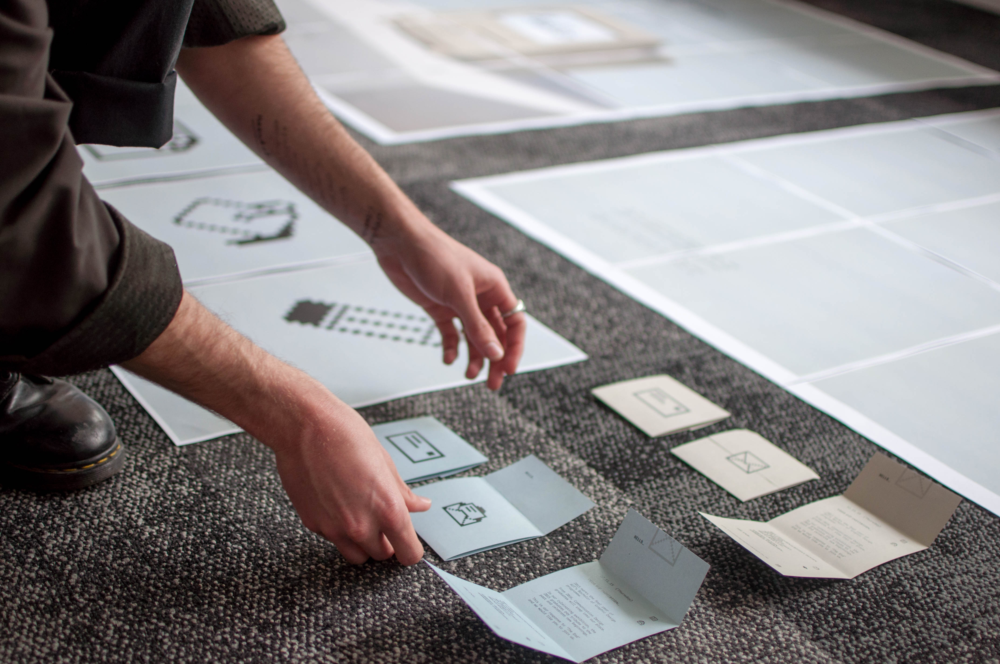
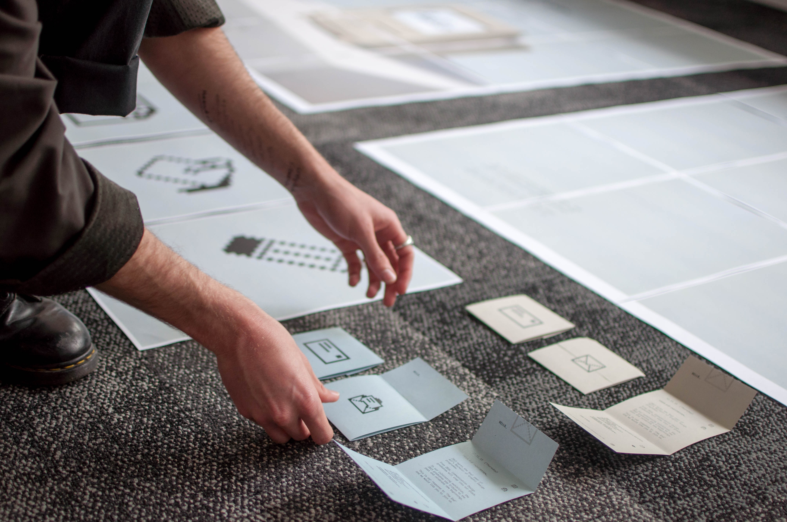

All the details you need_
Opening Night_
The exhibition will open on the 12th of November at 7pm to members of the public. Come and enjoy some food, drink and the work of 2015's graduating graphic designers.
13th & 14th_
Exhibition open from 10am - 5pm
Where_
27 St Paul Street, Auckland, WE Building, level 5.
 
